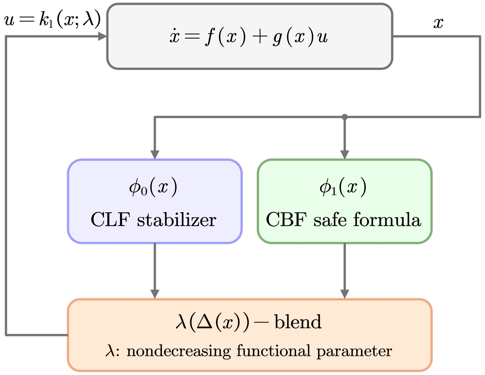
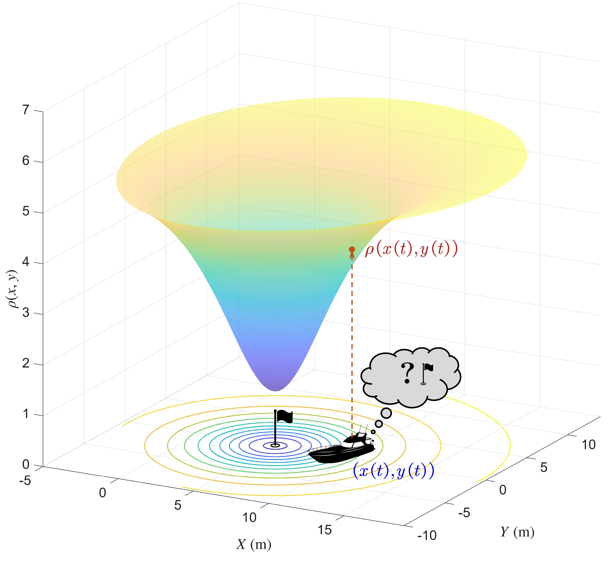
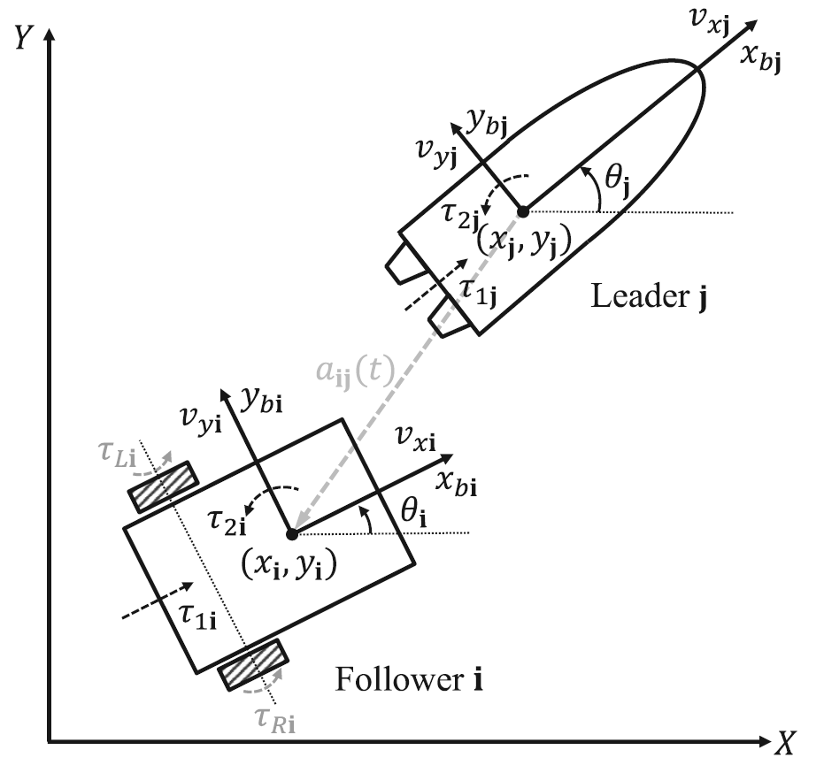

|
Research Overview
My research develops nonlinear control methods for robotic and autonomous systems, with current interests in safety-critical control, extremum and source seeking, and cooperative control of nonholonomic and underactuated systems.
Research Areas
|
 |
Safety-Critical Control and Autonomous Systems
We develop constructive methods for safety-critical autonomous systems, with the goal of achieving reliable operation in the presence of dynamical constraints, limited actuation, uncertainty, and complex environments. Our research combines nonlinear control, stability theory, and safety analysis to study fundamental questions in safe stabilization, constraint satisfaction, and autonomous decision making. Particular attention is given to the systematic design of controllers and certificates that provide rigorous guarantees of safety and stability while remaining suitable for implementation on robotic systems. We are also interested in robustness, feasibility, and compositional properties of safety-critical control methods, especially for systems with nonlinear, nonholonomic, underactuated, or networked dynamics. These ideas are applied to a broad range of autonomous systems, including mobile robots, autonomous vehicles, multi-agent systems, and other safety-critical robotic platforms.
Selected Publications:
T. Han and B. Wang, “Safety-Critical Stabilization of Force-Controlled Nonholonomic Mobile Robots,” IEEE Control Systems Letters, vol. 8, pp. 2469-2474, 2024. [pdf]
B. Wang, T. Han, and G. Wang, “Further Results on Safety-Critical Stabilization of Force-Controlled Nonholonomic Mobile Robots,” ASME Letters in Dynamic Systems and Control, vol. 6, no. 2, Art. no. 021011, 2026. [pdf]
B. Wang and M. Krstic, “Universal Formula Families for Safe Stabilization of Single-Input Nonlinear Systems,” arXiv preprint arXiv:2603.22654, 2026. [arXiv]
|
|
 |
Extremum Seeking and Source Seeking for Autonomous Systems
We develop extremum seeking and source seeking methods for autonomous systems operating with limited sensing and without direct position information. Our research investigates measurement-driven control strategies for mobile robots and underactuated systems using tools from averaging, symmetric-product approximations, nonlinear systems theory, and stability analysis. These methods rely primarily on real-time measurements of an unknown signal field and are designed to provide rigorous convergence guarantees under practical sensing and actuation constraints. Current interests include source seeking for nonholonomic and underactuated vehicles, extremum-seeking-based motion control, and autonomous search with partial or intermittent measurements. Potential applications include environmental monitoring, localization, search and rescue, signal tracking, and autonomous sensing in GPS-denied environments.
Selected Publications:
B. Wang, S. Nersesov, H. Ashrafiuon, P. Naseradinmousavi, and M. Krstic, “Underactuated Source Seeking by Surge Force Tuning: Theory and Boat Experiments,” IEEE Transactions on Control Systems Technology, vol. 31, no. 4, pp. 1649-1662, 2023. [pdf]
B. Wang, H. Ashrafiuon, and S. Nersesov, “Extremum Seeking Control for Antenna Pointing via Symmetric Product Approximation,” IFAC-PapersOnLine, vol. 59, no. 30, pp. 869-874, 2025. [pdf]
B. Wang, “Nonholonomic Source Seeking by Torque Tuning: Local and Semi-Global Feedbacks,” arXiv preprint arXiv:2607.02458, 2026. [arXiv]
|
|
 |
Networked and Underactuated Robotic Systems
We develop distributed and nonlinear control methods for networked robotic systems with heterogeneous dynamics, limited actuation, and restricted sensing or communication. Our research focuses on coordination, formation control, stabilization, and tracking for multi-agent systems composed of nonholonomic, underactuated, and heterogeneous vehicles. Particular attention is given to control architectures that rely on local information and remain effective without global position measurements or centralized coordination. We are interested in both the fundamental properties of networked nonlinear systems and the design of scalable control strategies for cooperative autonomy. Applications include teams of mobile robots, surface vessels, aerial and space vehicles, and other multi-agent robotic systems operating in uncertain or communication-constrained environments.
Selected Publications:
B. Wang, H. Ashrafiuon, and S. Nersesov, “Leader-Follower Formation Tracking and Stabilization Control for Heterogeneous Planar Underactuated Vehicle Networks,” Systems & Control Letters, vol. 156, Art. no. 105008, 2021. [pdf]
B. Wang, S. Nersesov, and H. Ashrafiuon, “Formation Regulation and Tracking Control for Nonholonomic Mobile Robot Networks Using Polar Coordinates,” IEEE Control Systems Letters, vol. 6, pp. 1909-1914, 2022. [pdf]
B. Wang and A. Loria, “Leader-Follower Formation and Tracking Control of Underactuated Surface Vessels,” arXiv preprint arXiv:2407.18844, 2024. [arXiv]
|
Research Collaborators
|